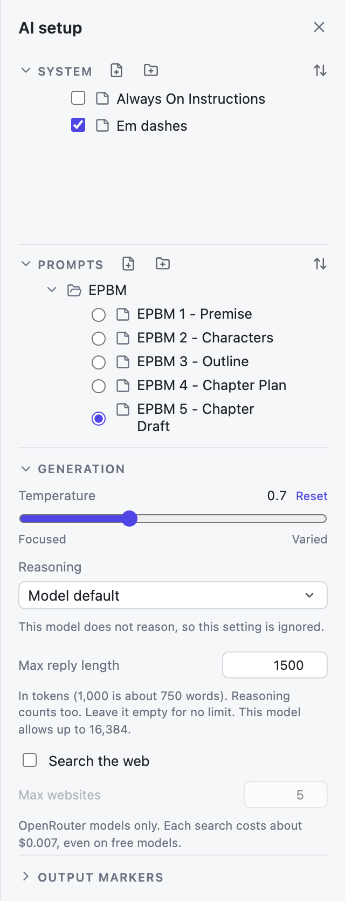
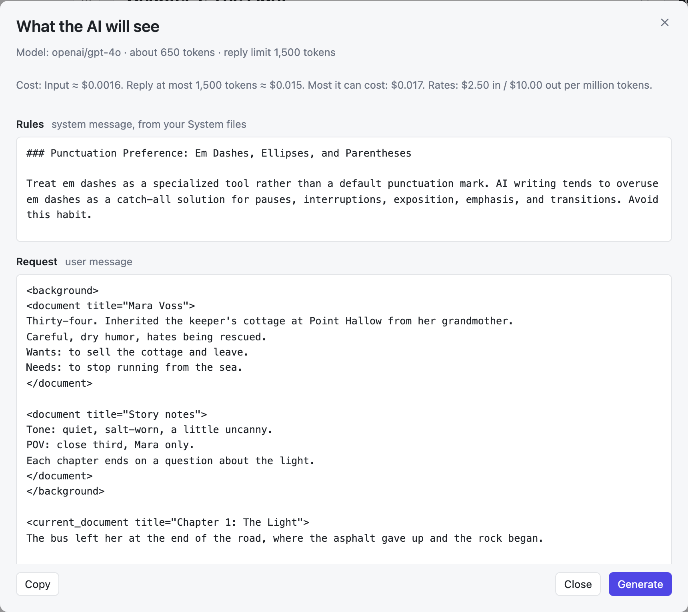
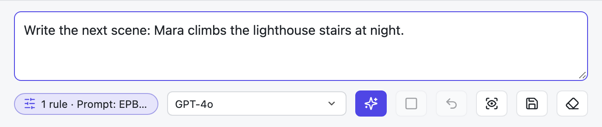
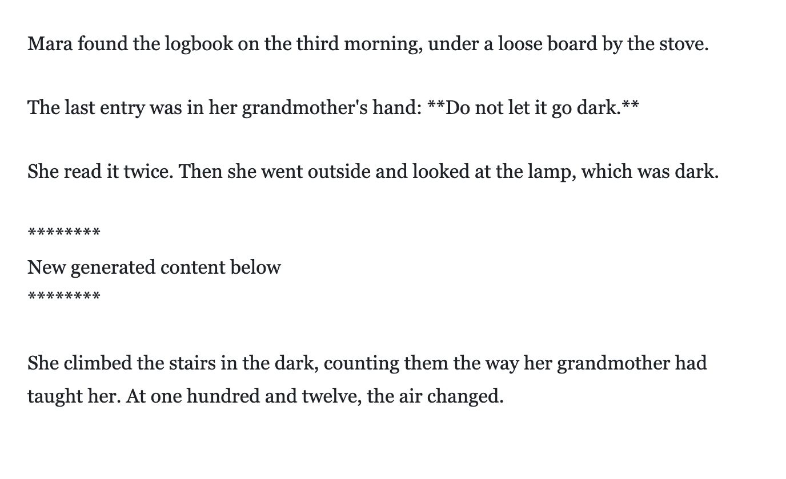

Working with AI
Choose what the AI sees, tell it what to write, and keep control of the result.
How it works
- You choose what the AI sees: rules, notes, chapters, and the open document.
- You write an instruction, or pick a saved one.
- You put the cursor where the new text should go and click Generate.
- The AI's text appears at the cursor, between two markers, so you can see what is new.
You need a model first. See Models and settings.
The AI setup panel

Open it with the panel button in the top bar, the summary chip next to the instruction box, or ⌘⌥\. If the window gets too narrow, the panel tucks itself away to give the editor room.
- System holds your rules: style, voice, things to avoid. Tick the ones to use. They go to the AI as rules, which models take more seriously than plain text.
- Prompts holds saved instructions, such as the EPBM steps. Pick one, and it fills the instruction box.
- Generation and Output markers are explained below.
System and Prompts are shared by all your projects.
What the AI sees
Each request contains, in this order:
- the ticked System files, as rules,
- the ticked Background documents,
- the ticked Writing documents,
- the open document, including changes you have not saved yet,
- your instruction.
Each part is labeled with its title, so the model can tell your notes from your chapters. To check before sending, click the eye-in-a-frame button next to Generate, or click the AI request number in the status bar:

Copy puts the whole text on your clipboard. Generate sends it.
The AI dock

- Instruction box: what you want the AI to do.
- Summary chip: how many rules are ticked and which prompt is picked. Click it to open the AI setup panel.
- Model: the model to use.
- Generate (the sparkle), or ⌘↵.
- Stop (the square), or Esc.
- Undo last generation: removes the AI's last text. It goes back up to 10 generations.
- Preview AI request, Save, and Clear instruction.
In a narrow window, some buttons move into the ⋯ menu.
Where the text goes, and the markers

The AI writes at your cursor. Markers show where its text begins and ends. Change them under Output markers in the AI setup panel:
- Untick Mark where AI text begins and ends to turn them off.
- Change the wording of the Before and After markers, or leave one empty to skip it.
- The After marker only appears when the AI writes at the start or in the middle of your text.
Generation settings
| Setting | What it does |
|---|---|
| Temperature | From Focused (0) to Varied (2). The default is 0.7. Higher values give more surprising text. |
| Reasoning | How hard a reasoning model thinks before writing: Model default, Off, Low, Medium, or High. The note below it says what the chosen model supports. |
| Max reply length | The longest reply, in tokens. 1,000 tokens is about 750 words. Reasoning counts too. Leave it empty for no limit. |
| Search the web | Lets an OpenRouter model look things up online, with up to 10 websites. Each search costs about $0.007, even on free models. |
Size and cost
The status bar shows the size of the next request in tokens, and its cost:
- up to $0.017: the most it can cost, when a Max reply length is set.
- $0.0016 + reply: the input cost; the reply is extra because its length is open.
- free for free models, and local for Ollama models.
- price unknown when the model is not in OpenRouter's price list.
Hover over the number for the full breakdown. The app updates OpenRouter's prices once a day while AI features are on.
Turning AI off
To use SJB Writer as a plain editor, open Settings and untick Use AI features. The AI panel, the instruction box, and Generate disappear. Your AI settings are kept for when you turn it back on.